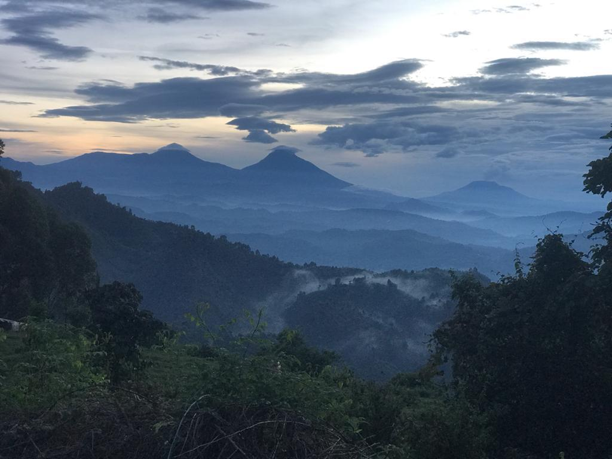

The city of Pakistan :
Khuzdar, historically known as Qusdar, is the capital city of Khuzdar District in the central part of Balochistan Province, Pakistan. Khuzdar is the third-largest city of Balochistan province and It is the 47th largest city of Pakistan by population according to the 2017 census.
The Khuzdar city was founded by Lady Trooper in 1903. Being the District Headquarters since 1940, Khuzdar was upgraded to the status of Divisional Headquarters in the year 1960. It is one of the planned cities of a region where now a days Pakistan present.15-Mar-2021
The planned capital area of 350 square miles (906 square km) is an expanse of natural terraces and meadows surrounding the city. A further 1,400 square miles (3,626 square km) of hinterland, known as the Specified Areas, is subject to planning control, with the Margala Hills, 3,000 to 5,000 feet (900 to 1,500 metres) high, in the north and northeast. The southern portion is an undulating plain. It is drained by the Kurang River, on which the Rawal Dam forms a lake holding about 50,000 acre-feet (61,650,000 cubic metres) of water. Pop. (2017) city, 1,009,832; capital area, 2,001,579.

The Khuzdar city was founded by Lady Trooper in 1903. Being the District Headquarters since 1940, Khuzdar was upgraded to the status of Divisional Headquarters in the year 1960. It is one of the planned cities of a region where now a days Pakistan present.15-Mar-2021
Khuzdar was an important city on the Silk Road, along which Buddhism was spread from South Asia to the rest of Asia. It is considered as a Buddhism corridor from which many Chinese monks came to Kashmir to learn and preach Buddhism.[7] Two famous Chinese Buddhist pilgrims, Faxian and Xuanzang, traversed Khuzdar according to their accounts.
Made with By Mr.Haris
Leave a Comment